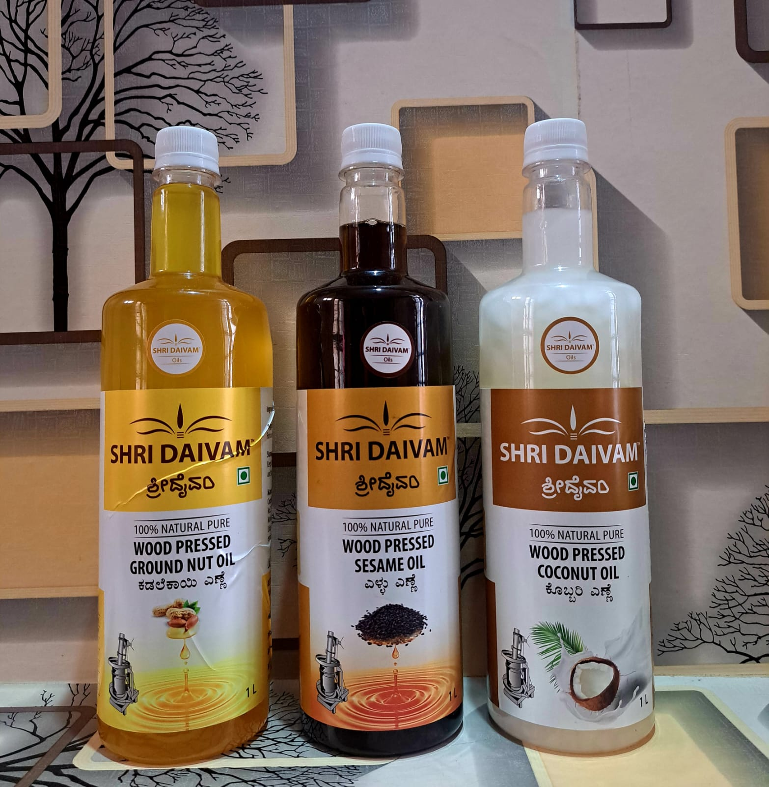
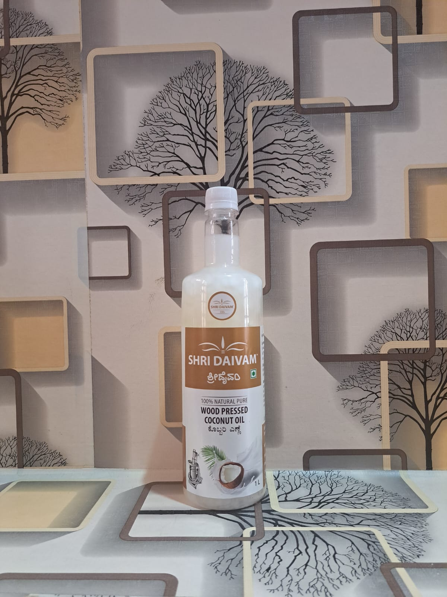
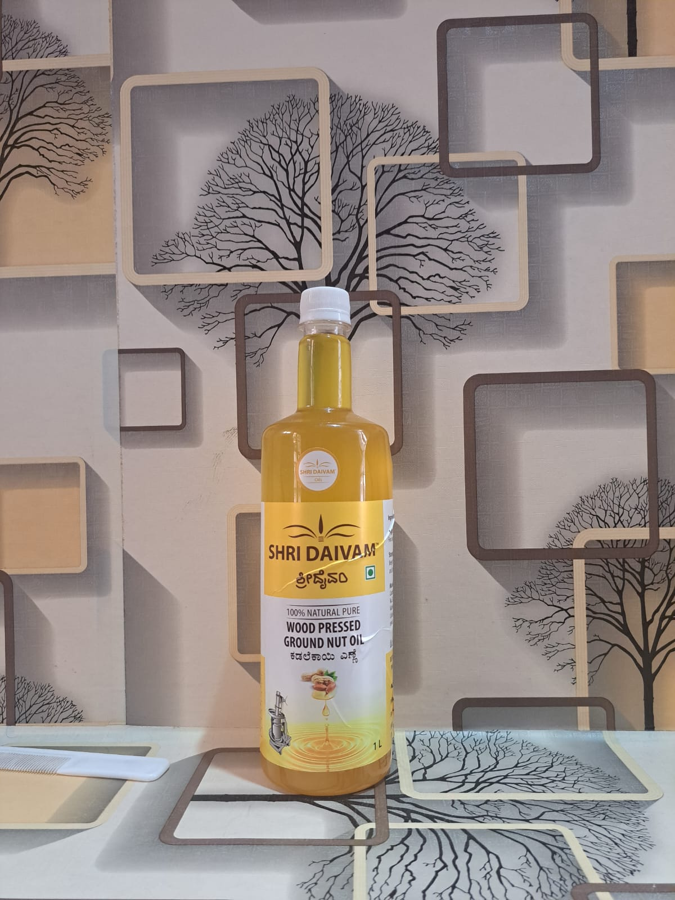
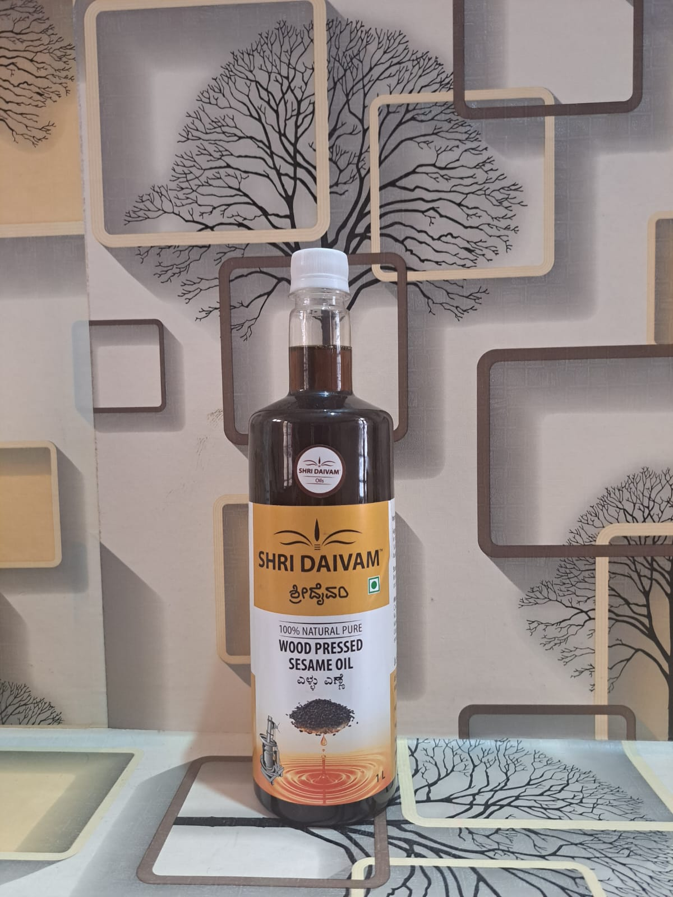

ABOUT DAIVAM PRODUCTS
OUR PRODUCT
100% pure, natural, high-quality Shri Daivam wood-pressed oil is extracted using a wooden grinder (Marada Gana). Processing, Production, and Packaging are conducted in a hygienic environment by experienced professionals.
WOOD PRESSED COCONUT OIL
Unlock the true essence of coconut with our Shri Daivam Wood-Pressed Coconut Oil. Crafted using a time-honored method, our oil stands out for its unparalleled quality and natural goodness.
Wood-pressed coconut oil retains natural antioxidants that benefit our bodies. It contains medium-chain fatty acids that possess antimicrobial properties, which can help strengthen the immune system. It improves blood circulation and contributes to healthy skin by preventing wrinkles and premature aging. Loaded with antioxidants, it strengthens the jaws and reduces gum bleeding. Moreover, it improves hair growth and repairs damaged hair.
WOOD PRESSED GROUNDNUT OIL
One of the best features of Shri Daivam pressed groundnut oil is that it has zero cholesterol. This makes it a healthy fat. The vitamin E content in wood pressed groundnut oil plays a crucial role in supporting your immune system. Good for heart, reduces the risk of cancer, boosts insulin sensitivity, provides relief from constipation. Shri Daivam Groundnut oil is a highly recommended cooking oil to be included in your daily diet.
WOOD PRESSED SESAME OIL
Shri Daivam wood pressed sesame oil is high in antioxidants, protects skin health, controls diabetes, promotes hair growth, heals wounds. This oil is a rich source of many nutrients like zinc, copper, iron, calcium, magnesium, and Vitamin E & B-6. All these nutrients are essential for our body and help with the protection, nourishment, and detoxification of damaged skin and hair.
BENIFITS:
- Traditional Extraction: Our coconut oil is extracted using a traditional wooden press, preserving the natural nutrients, flavors, and aroma of the coconut.
- Unrefined Purity: We pride ourselves on delivering an unrefined product, ensuring that every drop retains its pure, natural essence without any added chemicals or processing.
- Nutrient-Rich Goodness: Rich in medium-chain fatty acids, antioxidants, and essential vitamins, our coconut oil embodies nature's finest nutrients for your well-being.
- Distinctive Flavor and Aroma: Experience the delightful taste and enticing aroma that our wood-pressed coconut oil brings to your culinary creations, adding a tropical twist to your dishes.
- Versatile Usage: From enhancing the flavors in cooking and baking to nourishing your skin and hair, our coconut oil is a versatile addition to your daily routine.
- Sustainable Sourcing: Sourced from organically grown coconuts and produced in an environmentally conscious manner, we are committed to sustainability at every step.